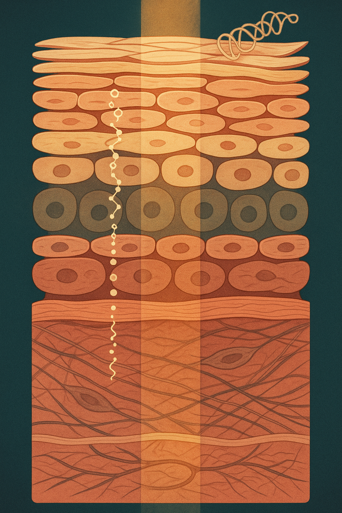

Review below. Reply approve to publish the Facebook post, or tell me edits.
Here is a puzzle most of us have run into without naming it. You try the same active ingredient twice, in two different products, and get two different results. Same percentage on the label. Same promises. One does something, one does nothing. The reason is rarely the ingredient list. It is whether the molecule can physically cross a wall that evolution built specifically to keep things out.
Your skin is not a sponge. It is a gate, and most of what you buy is too big to walk through it.
That wall deserves ten minutes of your attention, because once you understand it, a lot of skincare marketing becomes much easier to read.
The outermost layer of your skin is called the stratum corneum. It is startlingly thin: roughly 15 to 20 cell layers, somewhere between 10 and 20 micrometres deep. Fifteen layers. Ten micrometres. Thinner than a sheet of cling film.
Dermatologists describe its structure as brick and mortar. The bricks are corneocytes, flattened dead cells packed with keratin. The mortar is a lipid matrix of ceramides, cholesterol and fatty acids arranged in ordered sheets between them. The lipid organisation of this layer, and how it governs what passes through, was mapped in detail by Peter Elias in the early 1980s, and his model still frames how barrier science is taught today.
The stratum corneum has one job: keep water in, keep foreign molecules out. It is extremely good at that job. The inconvenient part is that it does not know the difference between pollution and your expensive serum. It does its job on both.
The most useful single number in this whole topic is 500. In 2000, Jan Bos and Marcus Meinardi published what is now called the 500 Dalton rule: molecules larger than roughly 500 daltons struggle to cross intact skin in meaningful amounts.
A dalton is a unit of molecular mass, roughly the mass of one hydrogen atom. So 500 daltons is a genuinely small molecule. Now anchor that against things you know:
Here is the honest consequence, stated plainly and without sneering at anyone. Large molecules are not useless. Hyaluronic acid is a superb humectant: it sits on the surface, binds water, and visibly plumps the outer layers. Collagen in a cream is a decent film former and moisturiser. Those are real, legitimate cosmetic effects. What those molecules are not doing is travelling through the barrier to rebuild anything underneath. They physically cannot. Once you hold that distinction, "collagen cream" and "collagen support" stop sounding like the same claim.
Passing the size check gets a molecule to the front door, not through the house. To move through the lipid mortar, a molecule needs some oil solubility. But to leave the mortar and reach the watery living layers below, it needs enough water solubility too. Chemists call this the partition problem: the ideal skin penetrant is a fence-sitter, neither fully oily nor fully watery.
Add stability. Some actives degrade in the jar, in light, in air, or on the skin's surface before they get anywhere. This is why "10% of X" on a label predicts far less than people assume. Ten per cent of an unstable, poorly partitioned molecule can deliver less to living skin than two per cent of a well-designed one.
Molecules that do cross take one of three paths. The main one is intercellular: a long, winding route through the lipid mortar, around every brick. The second is transcellular, straight through the cells, which is harder. The third is follicular: down hair follicles and their openings. Follicles are a small share of your skin's surface, but Nina Otberg and colleagues showed in 2004 that their size and density vary enormously across body sites, with the face and scalp far more densely covered than the forearm. Follicles act as a real shortcut and a small reservoir, which is one reason the same product can behave differently on your forehead than on your neck, and differently on you than on your sister.
The formula around the active is not packaging. It is transport. Hydrating or occluding the stratum corneum swells it and increases penetration, which is why applying some products to damp skin, or under a richer layer, changes what they do. Solvents matter. So does pH: Sheldon Pinnell's group showed in 2001 that topical L-ascorbic acid only absorbed meaningfully at low pH, below about 3.5. That acidity is also why well-formulated vitamin C stings some people. The sting and the delivery come from the same design decision.
Yes, and the difference is worth understanding, because it is a different category of question rather than a better answer to the same one. Light is not a molecule. It has no mass in daltons, so the size gate that stops hyaluronic acid simply is not the thing that governs it.
What governs light is wavelength. Shorter wavelengths, blue and violet, scatter and are absorbed very close to the surface. Longer wavelengths, red and near-infrared, scatter less and reach further into the tissue before they are absorbed by melanin, haemoglobin and water. So depth is set by physics of scattering and absorption, not by molecular size or by a formula's pH. Light-based skincare sits in the cosmetic device category, not medicine.
Next time a product makes a claim, run it through these:
A surface claim from a big molecule is fine. A "rebuilds from within" claim from a 300,000 Da molecule is not plausible, no matter how the bottle is worded. Judge products by mechanism, not adjectives.
Fifteen layers. Ten micrometres. One very selective gate. Read every label with that wall in mind and you will waste far less money.
Save this line for your next shelf audit: How big is the molecule? Can the vehicle carry it? Where does it need to act? Do those three answers agree?
If you ever want a closer look at the light-based side of this, the mask and its full spec are here.
A collagen molecule is about 300,000 daltons. Your skin stops almost anything over 500.
Your outer skin is a wall built to keep things out. Flattened cells set in a lipid mortar, about 10 to 20 micrometres of it.
The rough rule dermatologists use: above about 500 daltons, a molecule struggles to cross intact skin in useful amounts. Niacinamide sits around 122. Retinol around 286. Hyaluronic acid as usually supplied? Hundreds of thousands.
Big molecules still do real work at the surface, holding water and smoothing how skin looks and feels. They are just not rebuilding anything underneath, so read those claims accordingly.
And the part people rarely hear: the vehicle matters as much as the molecule. Occlusion, solvents and pH all change how much gets in. The same percentage in two formulas is not the same product.
So the useful habit: before believing a claim, ask where the ingredient would need to act, and whether a molecule that size could get there. (Light is not a molecule, so it plays by different rules. Depth there is set by wavelength, not size. Cosmetic device category, not medicine.)
P.S. If the light side of this interests you, the light therapy mask and its full spec are here: https://redermis.com.au/products/red-light-therapy-face-neck-mask
What is the one ingredient claim you have always been suspicious of? Drop the ingredient below and I will look up its actual dalton weight.
#skinscience #skincareeducation #skinbarrier #skincareingredients #molecularweight
IMAGE PROMPT: Editorial science illustration, Scientific American style, square 1:1, single iconic motif on deep plum-indigo negative space, ivory linework with amber and terracotta accents. Extreme macro of one seam of the stratum corneum: two cropped ivory flattened anucleate corneocyte plates meeting on a diagonal, with the intercellular space between them drawn as correctly stacked lipid bilayers, small round polar heads in ordered rows with fine tails, tight at depth and looser near the surface. Threading up and down that narrow lipid channel, a single file of small solid amber spheres passing through and reaching a warm glowing living layer at the bottom of the frame. Resting stopped flat on the top surface, one large irregular random coil drawn as a fine continuous line plus one large clustered aggregate, both clearly too wide for the channel, spread as a thin surface film. Push the size contrast hard: one nearly invisible dot slipping through the gap beside one enormous molecule stranded on the surface. Flat editorial shading, fine grain, hard tonal contrast so the blocked-versus-passing idea reads at 150px. No rope, no braid, no twine, no woven basketry, no knots, no wood grain, no text, no letters, no numbers, no people, no devices, no products.

Most skincare never gets past the front door.
Your outer skin is a wall: flattened cells set in a lipid mortar, about 10 to 20 micrometres thick, built to keep things out. It is very good at its job.
The rule of thumb: above roughly 500 daltons, a molecule struggles to cross intact skin.
Now check the labels.
Niacinamide: ~122. Retinol: ~286.
Hyaluronic acid as usually supplied: hundreds of thousands.
Collagen: ~300,000.
That does not make the big ones pointless, it makes them surface players. Water holding, smoothing, comfort. Not rebuilding.
And the formula matters as much as the molecule, because pH, solvents and occlusion all change how much gets in. Same percentage on the label, different product on your skin.
So the useful question is not "what is in it". It is: where does this need to act, and could a molecule that size actually get there?
Light is not a molecule, so it plays by different rules: cosmetic use, not medicine. If you want a closer look at that side of it, the light therapy mask and its full spec are in the bio.
Which product on your shelf are you now going to go and check the size of?
#skinscience #skinbarrier #stratumcorneum #skincarescience #evidencebasedskincare #skincareaustralia #skincaretips
IMAGE PROMPT: Vertical 4:5 editorial science illustration, elegant and tall, in the spirit of Quanta Magazine: a full-depth textbook cross-section of skin running from the very top of the frame to the very bottom, drawn as one continuous correct specimen. From top: about twelve layers of flattened anucleate corneocytes as thin overlapping cream and soft terracotta plates bound by fine pale gold lipid lamellae; then a thin granular layer with keratohyalin granules; then spinous cells with round nuclei and faint desmosomal linkages; then a single row of columnar basal cells sitting on a crisp basement membrane; then a deep dermis of woven collagen bundles in muted rose and clay, slender darker elastin fibres threading through, two spindle-shaped fibroblasts, and one hairpin capillary loop near the bottom. Overlaid on this tissue, three narrow vertical descent lanes are implied only by the particles themselves, no boxes and no dividers. Left lane: a stream of very small molecules drawn as tiny compact ring structures in fine cream linework, descending in a slightly zigzagging tortuous line between the corneocyte plates through the lipid mortar and continuing successfully into the living epidermis, where the last few fade near the basal row. Centre lane: medium molecules, visibly larger branched structures, entering the top plates and then halting midway through the corneum, stacking up against the lipid mortar. Right lane: two very large molecules drawn as irregular random tangles of fine continuous line, both far wider than any gap, resting on the outermost surface and spreading into a thin translucent surface film that hugs the top plates. Behind all three lanes, one slender uninterrupted shaft of warm amber light with faint parallel ray edges descends cleanly through every stratum from the very top edge to the collagen at the bottom, unobstructed by the barrier, its glow softly warming the collagen bundles where it lands. Palette: deep teal ground, cream and terracotta tissue, muted rose and clay dermis, pale gold lipid mortar, one warm amber light shaft as the only bright accent. Flat editorial illustration with fine hairline draughtsmanship, subtle grain, generous quiet spacing, vertical rhythm, restrained and gallery quality. Absolutely no text, no letters, no numbers, no labels, no DNA helix, no rope or braid, no people, no faces, no hands, no products, no masks, no devices.
**Title:** The 500 Dalton Rule: Why Most Skincare Never Actually Absorbs
**Description:** Does skincare actually absorb? Your outer skin is a size-sorted gate: molecules over about 500 daltons mostly stay on the surface. Four questions sort real claims from wishful ones. 1. How big is the molecule? 2. Is the vehicle built to carry it? 3. Where does it need to act? 4. Do those answers agree? Light is not a molecule, so it is governed by wavelength, not size. Cosmetic device, not medicine. The light therapy mask: https://redermis.com.au/products/red-light-therapy-face-neck-mask
**Hashtags:** #SkincareScience #SkinBarrier #RedLightTherapy #LightTherapyMask #SkincareTips
Note: this pin reuses the Instagram image.